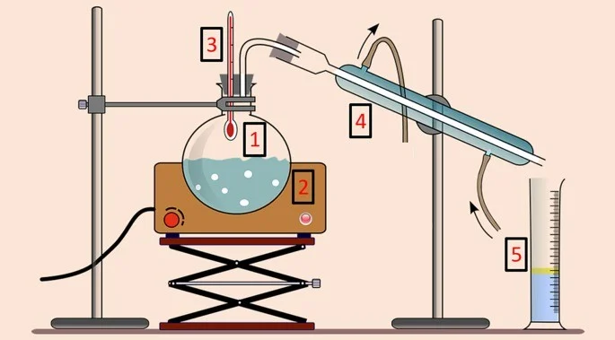
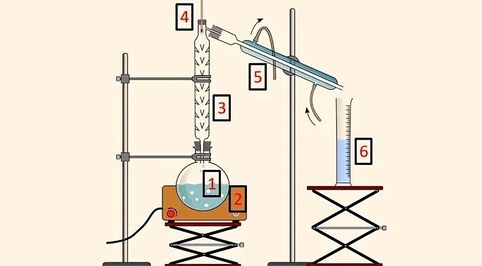
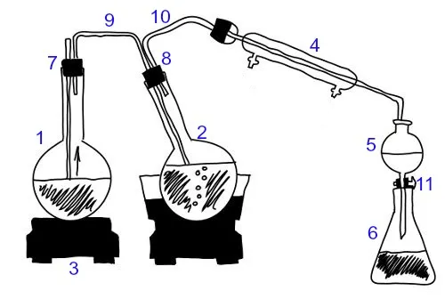

<!DOCTYPE html>
<html lang="en">
<head>
    <meta charset="UTF-8">
    <meta name="viewport" content="width=device-width, initial-scale=1.0">
    <title> Destilação </title>
    <link href="https://cdn.jsdelivr.net/npm/bootstrap@5.3.3/dist/css/bootstrap.min.css" 
    rel="stylesheet" 
    integrity="sha384-QWTKZyjpPEjISv5WaRU9OFeRpok6YctnYmDr5pNlyT2bRjXh0JMhjY6hW+ALEwIH" 
    crossorigin="anonymous">
    <style>
    #dstl{
        font-family: 'Franklin Gothic Medium', 'Arial Narrow', Arial, sans-serif;
        margin-left: 4%;
        margin-right: 4%;
        margin-top: 40px;
        color: #00c7a6;
        width: 92%;
        border-bottom: 3px solid #00c7a6; }

        #textb{
        margin-right: 4%;
        margin-left: 4%;
        font-family: 'Franklin Gothic Medium', 'Arial Narrow', Arial, sans-serif;
        font-size: 17px; }

        .Expl{
            margin-top: -10px;
            margin-left: 4%;
            margin-right: 4%;
            font-family: 'Franklin Gothic Medium', 'Arial Narrow', Arial, sans-serif;
            font-size: 1.1rem;
            color: white;
        }
        #dstltx{
        font-family: 'Franklin Gothic Medium', 'Arial Narrow', Arial, sans-serif;
        margin-right: 4%;
        margin-left: 4%;
        margin-top: 20px;
        color: #00c7a6;
        width: 90%;
        font-size: 1.8rem;
        }

        #EstAtomo{
            margin-left: 4.3%;
            margin-top: 10px;
        }
        .barInf {
    display: flex;
    justify-content: space-between;
    align-items: center;
    background-color: #f8f9fa;
    padding: 1rem;
    flex-wrap: wrap; /* Permitir que os itens se movam para a próxima linha */
}

.txtbarInfo {
    font-family: 'Arial', sans-serif;
    font-size: 1rem;
    color: #333;
    margin: 0;
    flex: 1; /* Permitir que o texto ocupe o espaço disponível */
}

.barInf img {
    max-width: 150px; /* Ajustar o tamanho da imagem conforme necessário */
    height: auto;
    margin-left: 1rem;
}

/* Media query para telas menores */
@media (max-width: 600px) {
    .barInf {
        flex-direction: column; /* Mudar direção dos itens para coluna */
        align-items: flex-start; /* Alinhar itens ao início */
    }

    .barInf img {
        margin-left: 0;
        margin-top: 1rem;
    }
}
        #body{
          background-color: #0d183a;
        }
        
        .navTP {
    padding-left: 0.75rem;
    padding-top: 1rem;
    width: 100%;
    background: white;
    height: 3.5rem;
    font-family: 'Gill Sans', 'Gill Sans MT', Calibri, 'Trebuchet MS', sans-serif;
    color: black;
    font-size: 1.25rem;
    text-decoration: none;
    gap: 1rem;
    display: flex;
}

@media (max-width: 1000px) {
    .navTP {
        flex-direction: column;
        align-items: center;
        height: auto;
        padding: 0.5rem;/* Definir a largura como 100% da viewport */
    }
    .nav-title {
        margin-bottom: 0;
    }

    .nav-links {
        justify-content: flex-end;
    }
}

        
    </style>
</head>
<body id="body">

</html><style src="index.js"></style>
<nav class="navbar navbar-expand-lg bg-body-tertiary navig">
  <nav class="navTP" >
        <a id="TMQ"> Terminologia  Química </a> 
        <a href="index.html" class="txts" style="text-decoration: none; font-family: system-ui, -apple-system, BlinkMacSystemFont, 'Segoe UI', Roboto, Oxygen, Ubuntu, Cantarell, 'Open Sans', 'Helvetica Neue', sans-serif; font-size: 1rem; margin-top: 0.05rem; color: rgb(94, 94, 94);"> Menu </a>
        <a href="Dicionário.html" class="txts" id="tBP" style="text-decoration: none; font-family: system-ui, -apple-system, BlinkMacSystemFont, 'Segoe UI', Roboto, Oxygen, Ubuntu, Cantarell, 'Open Sans', 'Helvetica Neue', sans-serif; font-size: 1rem; margin-top: 0.05rem; color: rgb(94, 94, 94);"> Dicionário </a>
        <a class="txts" style="text-decoration: none; font-family: system-ui, -apple-system, BlinkMacSystemFont, 'Segoe UI', Roboto, Oxygen, Ubuntu, Cantarell, 'Open Sans', 'Helvetica Neue', sans-serif; font-size: 1rem; margin-top: 0.05rem; color: rgb(70, 70, 70);"> Tabela Periódica </a>
        
        <a class="txts" style="text-decoration: none; font-family: system-ui, -apple-system, BlinkMacSystemFont, 'Segoe UI', Roboto, Oxygen, Ubuntu, Cantarell, 'Open Sans', 'Helvetica Neue', sans-serif; font-size: 1rem; margin-top: 0.05rem; color: rgb(216, 216, 216);"> Desabilitado </a>
        
    </nav>
</nav>

<h2 id="dstl"> Destilação </h2> 
    <p class="Expl"> Substância que libera única e exclusivamente o ânion OH– (íons hidroxila ou oxidrila) em solução aquosa.  </p>
    <p id="dstltx"> O que é destilação? </p> 
    <p class="Expl"> É o método de separação dos componentes de uma mistura homogênea em que o principal objetivo é utilizar novamente os componentes da mistura.  </p>
    <p id="dstltx"> Tipos de Destilação </p>
    <b><p class="Expl" style="font-family: 'Gill Sans', 'Gill Sans MT', Calibri, 'Trebuchet MS', sans-serif; color: #00c7a6;"> Destilação Simples </p> </b>
    <p class="Expl">  Utilizada para separar um líquido de um sólido dissolvido. Por exemplo, separar água de sal. A mistura é aquecida até que o líquido evapore, e o vapor é então condensado de volta ao estado líquido em outro recipiente. </p>
      <b><p class="Expl" style="font-family: 'Gill Sans', 'Gill Sans MT', Calibri, 'Trebuchet MS', sans-serif; color: #00c7a6;"> Equipamentos Utilizados Para Destilação Simples </p> </b>
       <br> <br>
      <p class="Expl" style="font-family:Cambria, Cochin, Georgia, Times, 'Times New Roman', serif; font-size: 0.87rem;"> Equipamentos para destilação simples &bull; Imagem: <a href="https://www.todamateria.com.br/" style="text-decoration: none;"> <b> Toda Matéria </b></a></p> <br>
    <p class="Expl"> São Utilizados : </p>
      <u class="Expl" style="text-decoration: none;"> 
        <li style="margin-left: 4%; margin-top: -30px; padding-bottom: 7px;"> Balão de Destilação (1), é  frasco que contém a mistura. </li>
        <li style="margin-left: 4%; padding-bottom: 7px"> Manta Aquecedora (2), ela fornece calor a mistura. </li>
        <li style="margin-left: 4%; padding-bottom: 7px" > Termômetro (3), utilizado para acompanhar a variação de temperatura. </li>
        <li style="margin-left: 4%; padding-bottom: 7px"> Condensador (4), ela é utilizada para resfriar o componente evaporado. </li>
        <li style="margin-left: 4%;"> Proveta (5), recolher o componente evaporado em forma líquida. </li> <br> <br>
      </u>
    <b><p class="Expl" style="font-family: 'Gill Sans', 'Gill Sans MT', Calibri, 'Trebuchet MS', sans-serif; color: #00c7a6;"> Destilação Fracionada </p> </b>
      <p class="Expl"> É utilizado para separar um líquido que está dissolvido em outro. Esta separação é possível pois os dois líquidos tem pontos de ebulição diferentes.
      </p>
    <b><p class="Expl" style="font-family: 'Gill Sans', 'Gill Sans MT', Calibri, 'Trebuchet MS', sans-serif; color: #00c7a6;"> Equipamentos Utilizados Para Destilação Fracionada </p> </b>
     <br> <br>
    <p class="Expl" style="font-family:Cambria, Cochin, Georgia, Times, 'Times New Roman', serif; font-size: 0.87rem;"> Equipamentos para destilação fracionada. &bull; Imagem: <a href="https://www.todamateria.com.br/" style="text-decoration: none;"> <b> Toda Matéria </b></a></p> <br>
      <p class="Expl"> São Utilizados : </p>
      <u class="Expl" style="text-decoration: none;"> 
        <li style="margin-left: 4%; margin-top: -30px; padding-bottom: 7px;"> Balão de Destilação (1), é  frasco que contém a mistura. </li>
        <li style="margin-left: 4%; padding-bottom: 7px"> Manta Aquecedora (2), ela fornece calor a mistura. </li>
        <li style="margin-left: 4%; padding-bottom: 7px;"> Proveta (3), equipamento utilizado para separação de acordo com a temperatura. </li>
        <li style="margin-left: 4%; padding-bottom: 7px" > Termômetro (4), utilizado para acompanhar a variação de temperatura. </li>
        <li style="margin-left: 4%; padding-bottom: 7px"> Condensador (5), ela é utilizada para resfriar o componente evaporado e transformar em líquido. </li>
        <li style="margin-left: 4%;"> Proveta (6), recolher o componente evaporado em forma líquida. </li>
      </u>
    <b><p class="Expl" style="font-family: 'Gill Sans', 'Gill Sans MT', Calibri, 'Trebuchet MS', sans-serif; color: #00c7a6;"> Destilação por arraste de Vapor </p> </b>
    <p class="Expl"> Este tipo de destilação é utilizado para obter os chamados óleos essenciais. O óleo essencial é retirado de plantas para fazer perfumes, medicamentos e até produtos de limpeza.
    </p> </b>  <br> <br><p class="Expl" style="font-family:Cambria, Cochin, Georgia, Times, 'Times New Roman', serif; font-size: 0.87rem;"> Equipamentos para destilação fracionada. &bull; Imagem: <a href="https://brasilescola.uol.com.br/" style="text-decoration: none;"> <b> Brasil Escola </b></a></p> <br>
    <p class="Expl"> São Utilizados : </p>
    <u class="Expl" style="text-decoration: none;"> 
      <li style="margin-left: 4%; margin-top: -30px; padding-bottom: 7px;"> Balão de fundo redondo (1), frasco que contém água. </li>
      <li style="margin-left: 4%; padding-bottom: 7px"> Balão de fundo redondo (2), planta utilizada para a extração do óleo essencial (A planta deve ser triturada e talvez com água ). </li>
      <li style="margin-left: 4%; padding-bottom: 7px" > Manta Aquecedora (3), utilizada para aquecer a água do balão (1). </li>
      <li style="margin-left: 4%; padding-bottom: 7px"> Condensador (4), ela é utilizada para resfriar o componente evaporado e transformar  em líquido. </li>
      <li style="margin-left: 4%;"> Funil de Separação (5), onde a água e os olhos essenciais são separados. </li>
      <li style="margin-left: 4%;"> Balão de Recebimento (6), onde o líquido destilado é colocado. </li>
      <li style="margin-left: 4%;"> Termômetros (7 e 8), inseridos em forma de rolha no topo de cada balão de fundo redondo. </li>
      <li style="margin-left: 4%;"> Tubo de entrada (9), conecta ao líquido do balão 2. </li>
      <li style="margin-left: 4%;"> Tubo de saídaS (10), que passa pela cabeça de destilação (4) e chega ao condensador (5). </li>
      <li style="margin-left: 4%;"> Grampo (11), que prende o tubo 10. </li>
      
    </u>
    <b><p class="Expl" style="font-family: 'Gill Sans', 'Gill Sans MT', Calibri, 'Trebuchet MS', sans-serif; color: #00c7a6;"> Destilação a Vácuo </p> </b>
    <p class="Expl"> Utilizada para separar líquidos com pontos de ebulição muito altos. Ao reduzir a pressão, o ponto de ebulição dos líquidos diminui, permitindo a destilação a temperaturas mais baixas, o que evita a decomposição térmica dos componentes.
    </p> </b>  <br> <br>
    <p class="Expl"> São Utilizados : </p>
    <u class="Expl" style="text-decoration: none;"> 
      <li style="margin-left: 4%; margin-top: -30px; padding-bottom: 7px;"> Balão de Destilação (1), é  frasco que contém a mistura. </li>
      <li style="margin-left: 4%; padding-bottom: 7px"> Manta Aquecedora (2), ela fornece calor a mistura. </li>
      <li style="margin-left: 4%; padding-bottom: 7px" > Termômetro (3), utilizado para acompanhar a variação de temperatura. </li>
      <li style="margin-left: 4%; padding-bottom: 7px"> Condensador (4), ela é utilizada para resfriar o componente evaporado. </li>
      <li style="margin-left: 4%;"> Proveta (5), recolher o componente evaporado em forma líquida. </li>
    </u>  

    

    <p id="dstltx"> Uso da Destilação </p>
    <p class="Expl"> Como você viu, a destilação é bem utilizada para alguns tipos de separação. Mas a destilação não é usada apenas em laboratórios, é usada em industrias também. Veja baixo onde ela também é utilizada</p>
    <b><p class="Expl" style="font-family: 'Gill Sans', 'Gill Sans MT', Calibri, 'Trebuchet MS', sans-serif; color: #00c7a6;"> Industrias Petroquímicas </p> </b> 
    <p class="Expl"> A destilação é usada na insdustria petroquímica para a refinação do petróleo, essa refinação é feita para obter seus derivadosl, como gasolina, diesel e querosene. </p>

   <b> <p class="Expl" style="font-family: 'Gill Sans', 'Gill Sans MT', Calibri, 'Trebuchet MS', sans-serif; color: #00c7a6;"> Células de Combustível </p></b>
    <p class="Expl"> Ele é utilizado especialmente em células de combustível, ele é utilizado para reduzir o oxigênio. Na maioria das vezes em uma reação com hidrogênio para formar água.</p>

    <b><p class="Expl" style="font-family: 'Gill Sans', 'Gill Sans MT', Calibri, 'Trebuchet MS', sans-serif; color: #00c7a6;"> Tratamento de Água </p></b>
    <p class="Expl"> A destilção pode ser usada para remover impuresas e sais. </p>
    <br><br><br><br><br>
    <nav class="barInf"><p class="txtbarInfo"> Este site foi feito por alunos da  <a href="https://www.cps.sp.gov.br/etecs/etec-elias-nechar/"><b> Etec Elias Nechar, </b> </a><br> as
      alguns textos foram retirados de IA, e outros foram de sites como <a href="https://www.todamateria.com.br/"> Toda Máteria </a> <a href="https://mundoeducacao.uol.com.br/"> Mundo Educação, </a> <a href="https://brasilescola.uol.com.br/https://brasilescola.uol.com.br/"> Toda Máteria. </a> <br>
      Viu algo com erro? Entre em contato. <br>
    heitor.cangussu@etec.sp.gov.br <br>  joao.almeida332@etec.sp.gov.br </p>
     <br>
    
    </nav>
</body>
</html>
